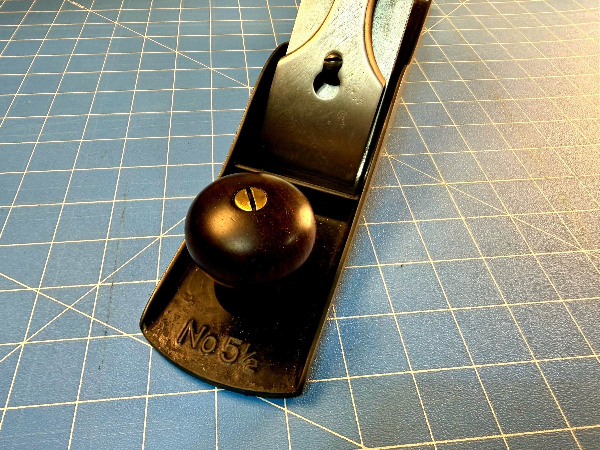
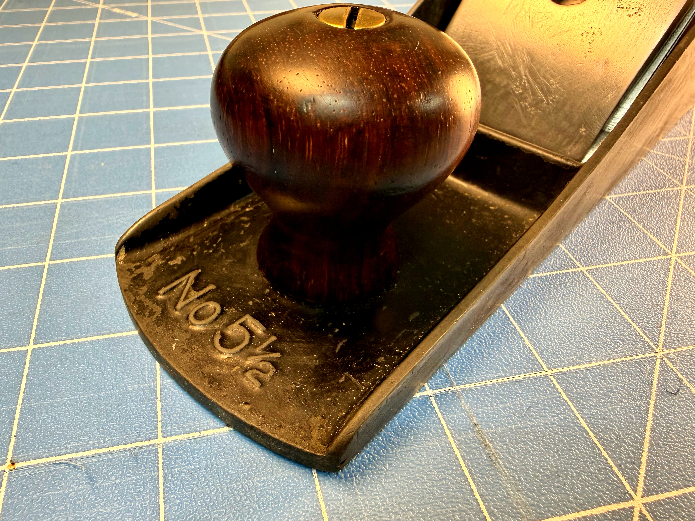
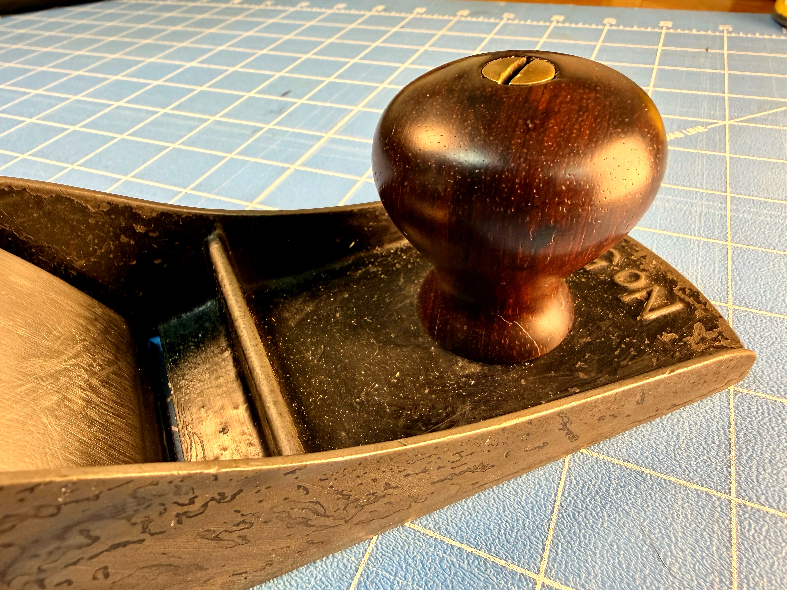

The one Stanley didn't need to make.
The No. 5½ sits in a weird middle ground in the Bailey lineup — wider than a standard No. 5 Jack, shorter than a No. 6 Try plane. Stanley made it anyway, because it was the right tool for a specific kind of work, and enough people knew that to keep it in the catalog for decades.
Its 2⅜″ blade — a full quarter inch wider than the No. 5 — gives you more surface contact per stroke without climbing to the full heft of a fore plane. For taking rough stock down to something usable, that extra width matters. It's not a specialty tool. It's a workhorse that earns its spot on the bench every single session.
This one is cast "No 5½" right into the toe. No guessing, no squinting at faint stamps. It tells you exactly what it is.
"The No. 5½ is the plane Stanley didn't need to make — and made anyway, because it was the right tool."
Before TheToddMark existed as anything documented.
This restoration happened before I had a website or a YouTube channel. I've picked up a lot of vintage hand planes from estate sales and other sources over the years, and this No. 5½ was one of them. A more comprehensive write-up covering the full collection is coming. This is the story of this one.
Condition on arrival was exactly what you'd expect: japanning cracked and worn at the high-contact zones, surface rust on the sole, the rosewood knob and tote gone dark and dry. The grain was buried under years of grime and oxidized finish.
Nothing was broken. The casting was solid — no cracks, no repairs, frog adjuster screw present and functional. The lateral adjustment lever moved freely. Underneath all that patina was a plane that wanted to work again.
The rosewood on the front knob was the tell. Even dirty and unfinished, you could see the grain had real figure and warmth to it. The brass knob bolt centered on top was still clean. These details tell you whether a tool is worth the effort. This one was.

What I was actually working with.
Heavy japanning wear at toe, heel, and cheeks. Surface rust across the sole. Rosewood knob and tote dry and darkened, grain buried under grime and oxidized finish. The frog adjuster screw was present — placing manufacture at post-1910, consistent with Type 11–16 production (roughly 1910–1943). Lever cap seated and functional. Lateral adjustment lever moving freely.
The good news: solid casting throughout. No cracks, no missing parts, no previous repairs to undo. A complete plane that needed cleaning and finishing work, not surgery.

Rust, rosewood, and working through it step by step.
Step 1 — Rust Removal. Evaporust did the heavy lifting on the blade and smaller hardware — a good long soak to lift the surface rust without attacking the underlying metal. Following guidance from Rex Krueger and others in the hand tool community, the approach here is deliberate: remove what needs to go, preserve what doesn't. Some quality time on the fine grinding wheel to clean up the metal surfaces afterward.
Step 2 — Rosewood Prep. I scraped the old finish from the knob and tote using the back edge of a chisel — a technique I picked up from Paul Sellers, and one that works better than you'd expect. You get real control, and it's kinder to the wood than aggressive sanding. My card scraper got some action too on the flatter sections. The goal was bare, clean wood before any finish went on.
Step 3 — Finishing the Rosewood. This is where the plane came back to life. The sequence:
Boiled linseed oil applied over several days — one coat at a time, letting each penetrate and cure fully before the next. BLO does something remarkable to old rosewood. The grain comes up, the color deepens, and figure that looked completely dead beforehand starts showing itself.
0000 steel wool between stages to knock back any raised grain or rough spots without cutting into the finish.
Three coats of dewaxed shellac, with 0000 steel wool between each coat to knock down any nibs.
Paste wax as the final coat — left to haze for five to ten minutes, then buffed out with a clean lint-free cloth.
"BLO does something remarkable to old rosewood. The grain comes up, the color deepens, and figure that looked completely dead beforehand starts showing itself."
I think the results turned out pretty well. That knob grain in particular — the warm reddish-brown against the brass bolt on top — is exactly what this wood was always capable of. It just needed the old finish out of the way.
The parts that actually take the time.
The rosewood finishing is where the patience lives. Each BLO coat needs time — real time, not "close enough" time. The shellac coats are fast individually but reward proper cure and proper knock-down between them. The paste wax step feels almost anticlimactic after everything that came before it, but it's what gives the wood that final hand feel that makes you want to pick the tool up.
The metalwork on this plane came up well with the Evaporust approach. No aggressive intervention needed — the casting was sound going in and sound coming out.
Honest about where this one stands.
As you can see in the photos, the rosewood is done. The metalwork is in good shape. What remains is the precision work that turns a clean tool into a working one:
Sole flattening — needs to go on a reference surface and get lapped true before this plane can be trusted for precision work.
Final polishing — a few areas on the body still want attention.
Chip-breaker edge — needs to be cleaned up and fitted properly to the blade.
Blade sharpening — fresh bevel, work through the grits, strop to a working edge.
None of what's left is complicated. It's just the remaining work.
"The rosewood is done. What remains is the precision work that turns a clean tool into a working one."
This plane, and the ones behind it.
Once the sole is flat and the blade is sharp, this one goes on the bench. The 5½ is exactly the right size for the kind of rough dimensioning work I do most — wide enough to be efficient, short enough to be nimble.
This restoration predates TheToddMark as a documented project, but it's representative of a lot of what's coming. I've acquired quite a few vintage hand planes from various sources over the years, and I plan to document them properly as the site and channel develop. The full collection write-up is on the list.

There will be more planes. There are already more planes.
Everything that touched this tool.
Some links below are affiliate links — I earn a small commission if you buy through them, at no extra cost to you. I only list what I actually used.
- Evaporust For rust removal on the blade and hardware. Long soak, no aggression — it lifts surface rust without attacking the base metal.
- Boiled Linseed Oil Applied in multiple coats over several days. One coat at a time — let each penetrate and cure fully. The grain transformation on rosewood is real.
- 0000 Steel Wool Between BLO coats and between shellac coats. Knocks down raised grain and nibs without cutting into the finish.
- Dewaxed Shellac Three coats over the BLO base. Dewaxed so it plays well with the wax topcoat. Steel wool between each coat.
- Paste Wax Final coat. Apply thin, haze for five to ten minutes, buff with a clean lint-free cloth. Gives the wood that hand feel that makes you want to pick the tool up.